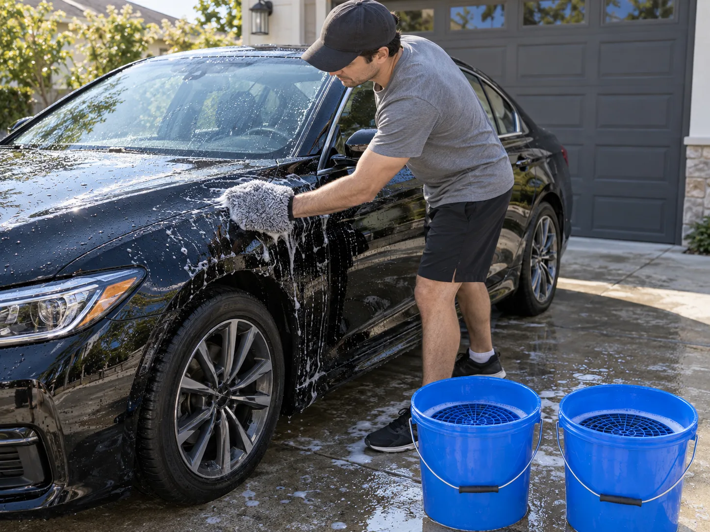
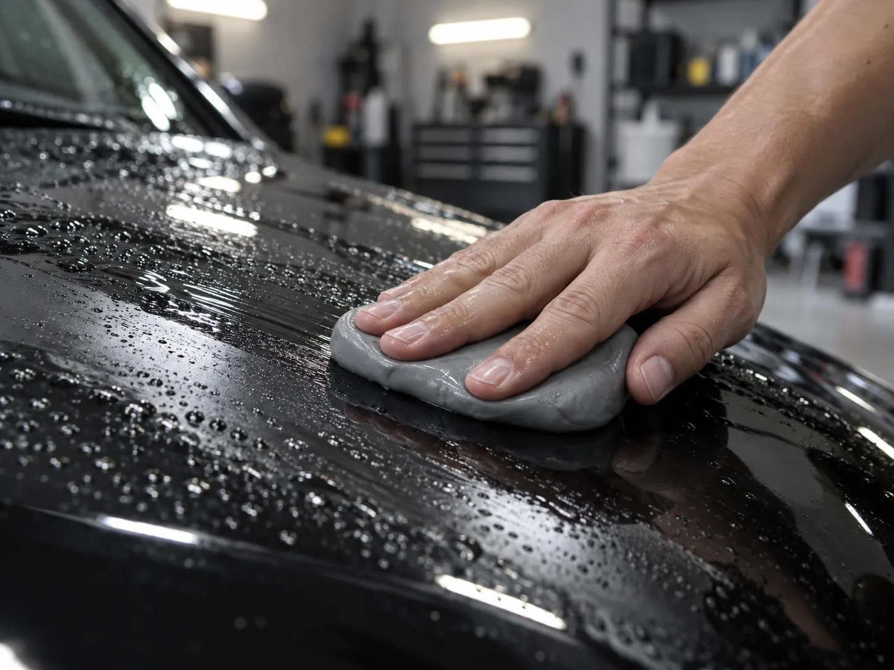
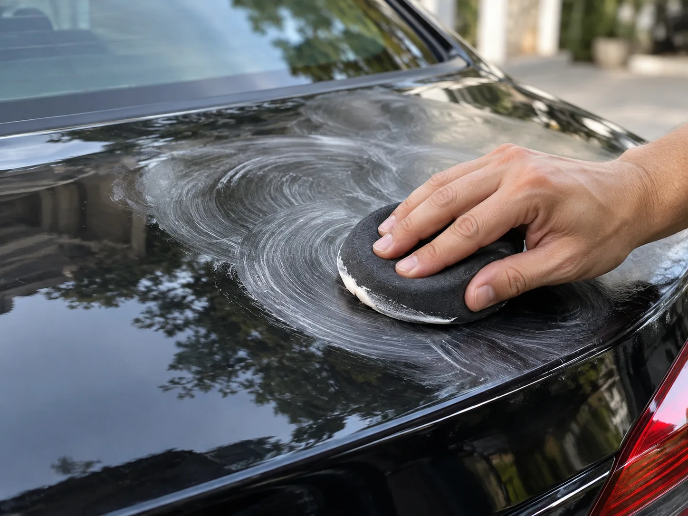
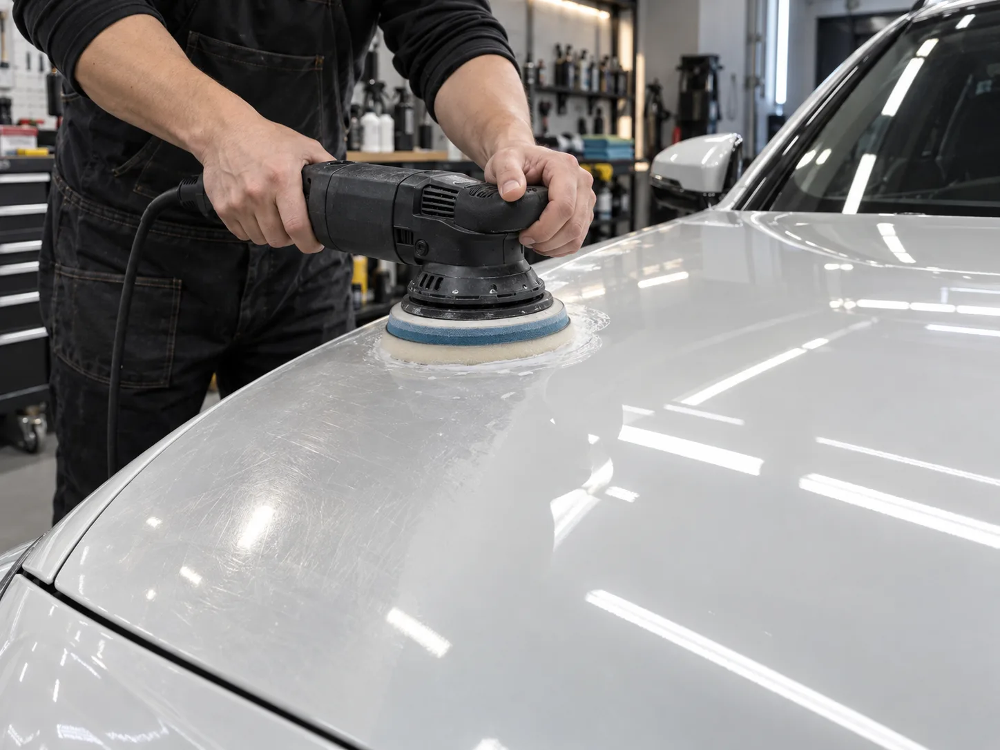
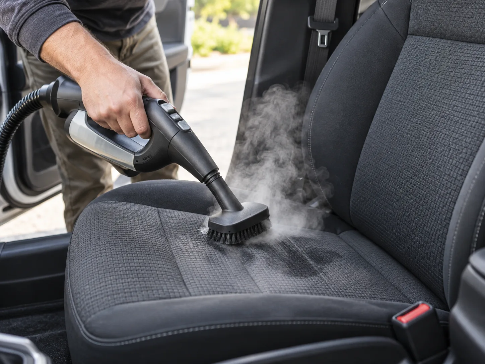

▲ 2버킷 세차와 그릿가드는 셀프 디테일링의 가장 기본이 되는 Lv.1 단계다

▲ 손세차만으로는 지워지지 않는 도장면 속 철분·타르 입자는 클레이바로 물리적으로 떼어내야 한다
세차장에서 매주 손세차를 맡기는데도 "광이 예전 같지 않다"거나 "세차 직후인데 표면이 까끌까끌하다"는 느낌을 받은 적이 있다면, 원인은 세차 횟수가 아니라 세차의 종류에 있을 가능성이 크다. 손세차는 어디까지나 먼지·이물질을 씻어내는 '세정' 작업이고, 도장면 표면에 박힌 오염물을 제거하거나(클레이바) 미세 스크래치를 갈아내고(폴리싱) 보호막을 새로 입히는(왁스·코팅) 작업은 세정과는 다른 별개의 공정이다. 이걸 통틀어 디테일링(detailing)이라 부른다. 손세차가 "깨끗하게 만드는 일"이라면 디테일링은 "도장 상태 자체를 관리하는 일"에 가깝다.
문제는 디테일링을 한 번에 다 하려고 하면 진입장벽이 확 높아진다는 점이다. 그래서 이 가이드는 처음부터 풀세트 장비를 갖추라고 권하지 않는다. 대신 레벨업 구조로 나눴다 — 지금 하는 세차 방식에 한 단계씩만 더 얹으면서, 필요한 만큼만 장비를 사고 실력을 쌓아가는 방식이다.
이 가이드의 레벨 구조
- Lv.1 기본 세차 고도화 — 지금 세차 방식에 장비 몇 가지만 더한다
- Lv.2 클레이바로 표면 정리 — 눈에 안 보이는 오염물을 걷어낸다
- Lv.3 폴리싱으로 스월마크 제거 — 난이도가 확 올라가는 구간
- Lv.4 왁스·실런트·코팅으로 마무리 — 보호막을 새로 입힌다
- 보너스 실내 스팀청소 — 외부 못지않게 방치되는 구간
1. 손세차·자동세차·디테일링, 뭐가 다른가
세 가지 모두 "차를 닦는다"는 점은 같지만 목적과 결과물이 다르다. 손세차·자동세차는 오염물을 씻어내는 데 집중하고, 디테일링은 도장 표면의 상태 자체를 끌어올리는 데 집중한다.
| 구분 | 방식 | 목적 | 비용(1회) |
|---|---|---|---|
| 자동세차(브러시형) | 기계 브러시가 차체를 훑고 지나감 | 빠른 세정 | 5천~1만5천원 |
| 손세차(전문점) | 사람이 직접 워시미트·타월로 세정 | 안전한 세정 | 2만~5만원 |
| 셀프 디테일링 | 클레이바·폴리셔·왁스 등 공정을 단계별로 직접 시공 | 표면 오염물 제거 + 흠집 연마 + 보호막 형성 | 장비는 한 번 구매(단계별 1만~20만원대), 소모품만 재구매 |
즉 손세차를 아무리 자주, 꼼꼼히 해도 도장면에 이미 박힌 철분이나 스월마크(미세 회오리 흠집)까지는 지워지지 않는다. 손세차는 디테일링의 일부(Lv.1)일 뿐, 디테일링 전체를 대체하지 못한다.
Lv.1 — 기본 세차 고도화
디테일링의 시작은 거창한 장비가 아니라 세차 방식 자체를 바꾸는 것이다. 핵심은 '2버킷 세차법'이다. 세척용 버킷과 헹굼용 버킷을 분리하고, 각 버킷 바닥에 그릿가드(플라스틱 격자망)를 깔아 워시미트에 묻은 모래 입자가 다시 도장면에 닿지 않도록 한다. 자동세차 브러시가 여러 차량의 오염물을 함께 묻혀 스월마크를 만드는 것과 같은 원리로, 손세차도 오염된 워시미트를 그대로 쓰면 스스로 흠집을 낼 수 있다.
| 구분 | 내용 |
|---|---|
| 필요 장비 | 버킷 2개 + 그릿가드, pH중성 카샴푸, 극세사 워시미트, 극세사 건조타월 |
| 비용 | 약 5만~8만원(장비 최초 구매, 이후 샴푸만 소모) |
| 소요시간 | 30분~1시간 |
| 난이도 | 하 — 세차 순서만 바꾸면 됨 |
세제는 알칼리성 왁스 제거 전용 샴푸보다 pH중성 카샴푸를 쓰는 게 기본이다. 알칼리성 세제는 세정력은 강하지만 기존에 입혀둔 왁스·코팅막까지 벗겨낼 수 있어, Lv.4까지 진행한 뒤에는 오히려 관리에 방해가 된다.
Lv.2 — 클레이바로 표면 정리

▲ 폴리싱은 컴파운드로 도장 표면을 미세하게 깎아내 스월마크를 지우는 공정이라 디테일링 단계 중 난이도가 가장 높다
세차를 아무리 꼼꼼히 해도 지워지지 않는 오염물이 있다. 브레이크 분진의 철분, 도로 위 타르, 말라붙은 벌레 자국 같은 것들은 도장면 표면에 물리적으로 박혀 있어서 물과 샴푸로는 떨어지지 않는다. 비닐장갑을 낀 손으로 세차 직후 도장면을 쓸어봤을 때 매끈하지 않고 오돌토돌하거나 까끌까끌한 느낌이 든다면 클레이바가 필요한 신호다.
사용법은 어렵지 않다. 도장면에 전용 윤활제(클레이루버)를 충분히 뿌린 뒤, 클레이바를 둥글납작하게 만들어 좌우로 수십 회 미끄러뜨리며 표면을 정리한다. 윤활제가 부족한 상태로 문지르면 클레이 자체가 마찰을 일으켜 오히려 흠집을 낼 수 있으니, 뻑뻑하게 움직인다 싶으면 윤활제를 더 뿌려야 한다. 바닥에 떨어뜨린 클레이 조각은 이물질이 묻었을 가능성이 크므로 바로 새것으로 교체한다.
| 구분 | 내용 |
|---|---|
| 필요 장비 | 클레이바(또는 클레이타월) + 전용 윤활제(클레이루버) |
| 비용 | 세트 기준 약 1만~3만원 |
| 소요시간 | 차량 1대 기준 30분~1시간 |
| 난이도 | 중하 — 윤활제만 충분히 쓰면 실패 위험이 낮음 |
※ 클레이 작업은 매번 할 필요 없이, 표면이 까끌까끌하게 느껴질 때(보통 3~6개월 주기)만 하면 충분하다.
Lv.3 — 폴리싱으로 스월마크 제거
클레이바로 표면의 이물질은 걷어냈지만, 이미 도장에 남은 스월마크(세차 마찰로 생긴 미세한 회오리 모양 흠집)나 잔기스는 그대로 남아 있다. 폴리싱은 연마 성분이 든 컴파운드로 도장 클리어코트 표면을 아주 얇게 깎아내 흠집 높이를 주변과 맞추는 방식으로 광택을 되살리는 공정이다. 디테일링 4단계 중 가장 난이도가 높고, 장비 투자도 가장 크다.
초보자에게는 회전형(로터리) 폴리셔보다 듀얼액션(DA) 폴리셔가 훨씬 안전하다. 패드가 회전과 동시에 편심 진동하는 구조라 한 자리에 오래 머물러도 로터리 방식만큼 도장을 태우거나 깊게 파낼 위험이 낮다. 그래도 실수는 회복이 어려운 작업이라, 처음에는 눈에 잘 띄지 않는 부위(도어 안쪽 패널 등)에서 충분히 연습한 뒤 넓은 패널로 넘어가는 게 안전하다.
| 구분 | 내용 |
|---|---|
| 필요 장비 | 듀얼액션(DA) 폴리셔, 폴리싱 패드(컷팅용·피니싱용), 컴파운드(연마제), 마스킹테이프 |
| 비용 | 입문용 DA폴리셔 5만~15만원대 + 패드·컴파운드 3만~5만원, 합계 약 10만~20만원 |
| 소요시간 | 차량 전체 3~5시간(첫 도전 시 연습 시간 별도) |
| 난이도 | 상 — 압력·속도·체류시간 조절 실패 시 도장 손상 가능 |
직접 하기 부담스럽다면 전문점에 맡기는 방법도 있다. 스월마크·잔기스 제거를 포함한 전체 폴리싱 비용은 소형·준중형 세단 기준 35만~45만원, 중형·준대형은 45만~55만원, 대형 세단·SUV는 50만~60만원 선이다. 단일 패널만 부분적으로 맡기면 5만~15만원 정도로 줄어든다.
전문점 폴리싱 가격표 확인 가능Lv.4 — 왁스·실런트·코팅으로 마무리

▲ 왁스는 폼 어플리케이터에 소량만 묻혀 얇게 펴 바른 뒤, 뿌옇게 마르면(헤이징) 극세사타월로 닦아내야 얼룩 없이 광이 산다
클레이바로 표면을 정리하고 폴리싱으로 흠집까지 지웠다면, 마지막은 그 상태를 보호막으로 덮어 유지하는 단계다. 흔히 헷갈리는 왁스·실런트·코팅은 성분과 지속기간이 다르다.
| 구분 | 성분 | 지속기간 | 비용 |
|---|---|---|---|
| 카나우바 왁스 | 천연 야자수 왁스 | 약 2~3개월 | 1만~3만원대 |
| 실런트 | 합성 폴리머 | 최대 6개월(왁스의 2~3배) | 2만~5만원대 |
| 세라믹 코팅(전문 시공) | 유리질 무기 코팅층 | 1년 이상 | 광택 작업 포함 80만~120만원대 |
왁스는 카나우바 특유의 깊고 따뜻한 광택감이 장점이지만 지속력이 짧고, 실런트는 광택은 왁스보다 다소 차갑게 느껴져도 2~3배 오래 유지된다. 둘을 함께 쓰는 것도 가능한데, 실런트로 기본 보호막을 깐 뒤 그 위에 왁스를 얇게 레이어링하면 지속력과 광택감을 동시에 잡을 수 있다. 도포는 폼 어플리케이터에 소량만 묻혀 원형으로 얇게 펴 바르고, 표면이 뿌옇게 마르는 '헤이징' 상태가 되면 깨끗한 극세사타월로 닦아낸다. 한 번에 두껍게 바른다고 오래가지 않고, 오히려 얼룩만 남긴다.
세 가지를 지속기간 순으로 다시 정리하면 왁스(2~3개월) → 실런트(최대 6개월) → 세라믹 코팅(1년 이상)이다. 관리 주기가 짧아도 광택감을 중시한다면 왁스를, 손이 덜 가면서도 준수한 지속력을 원하면 실런트를, 초기 비용을 감수하고 장기간 관리 부담을 줄이고 싶다면 세라믹 코팅을 고르면 된다. 다만 세라믹 코팅은 유리질 층이 도장 표면과 화학적으로 결합하는 방식이라 왁스·실런트처럼 손으로 얇게 바르고 끝나는 작업이 아니다. 시공 전 도장면이 완전히 평탄해야 하므로 반드시 폴리싱(Lv.3)을 먼저 마쳐야 하고, 경화 시간도 최소 24시간 이상 필요해 셀프 시공보다는 전문점 시공이 일반적이다.
초보자가 이 단계에서 가장 흔히 저지르는 실수는 순서를 건너뛰는 것이다. 클레이바 없이 바로 폴리싱을 하면 표면에 남은 이물질이 폴리싱 패드에 끼어 새로운 흠집을 만들고, 폴리싱 없이 바로 코팅을 입히면 기존 스월마크 위에 그대로 보호막이 덮여 흠집이 영구적으로 봉인된다. 두 번째 실수는 제품 과다 사용이다. 왁스·실런트는 한 번에 두껍게 바른다고 광이 더 사는 게 아니라 오히려 굳은 잔여물이 틈새에 끼어 지우기 어려워진다. 세 번째는 직사광선 아래에서의 작업이다. 뜨거운 도장면 위에서는 제품이 너무 빨리 말라붙어 얼룩(워터스팟·왁스 자국)이 남기 쉬우므로, 그늘이나 흐린 날 작업하는 게 기본이다.
보너스 — 실내도 잊지 말 것, 스팀청소

▲ 스팀청소는 천 시트·카펫·매트·환풍구처럼 진공청소기만으로는 안 지워지는 찌든 때에 효과적이다
외장 관리에 집중하다 보면 실내는 뒷전이 되기 쉽다. 진공청소기로는 표면 먼지만 빨아들일 뿐 시트 섬유 깊숙이 밴 때나 냄새까지는 잡지 못하는데, 이때 스팀청소기가 유용하다. 고온·고압 스팀이 섬유 사이 오염물을 풀어내고 살균 효과까지 있어 카펫·매트·환풍구·도어트림 틈새 청소에 특히 효과적이다.
주의할 점
- 가죽시트에는 고온 스팀을 직접 분사하면 안 된다 — 가죽이 갈라지거나 변형될 수 있다
- 천 시트·카펫·매트 등 직물류 위주로 사용하는 게 안전하다
- 스팀 분사 후에는 마른 타월로 수분을 눌러 닦아 곰팡이·냄새 재발을 막는다
휴대용 핸디형 스팀청소기는 10만원 초반대부터 구매할 수 있고, 고급형은 50만원을 넘기도 한다. 직접 장비를 사기보다 전문 스팀세차 업체에 맡기면 4만5천원~30만원 선에서 이용할 수 있다.
정리
체크포인트
- 손세차·자동세차는 오염물을 씻어내는 '세정'일 뿐, 표면 오염물 제거·흠집 연마·보호막 형성까지 포함하는 디테일링과는 범위가 다르다
- Lv.1 2버킷 세차+그릿가드로 세차 방식부터 바꾸고(5만~8만원), Lv.2 표면이 까끌까끌할 때 클레이바로 오염물을 걷어낸다(1만~3만원)
- Lv.3 폴리싱은 스월마크를 지우는 가장 난이도 높은 단계로, DA폴리셔 기준 장비값만 10만~20만원, 전문점은 35만~60만원대
- Lv.4 왁스(2~3개월)·실런트(최대 6개월)·세라믹코팅(1년 이상)은 지속기간과 비용이 다르니 관리 주기에 맞춰 고른다
- 실내는 천 시트·카펫 위주로 스팀청소를 병행하되, 가죽시트에는 고온 스팀을 직접 분사하지 말 것